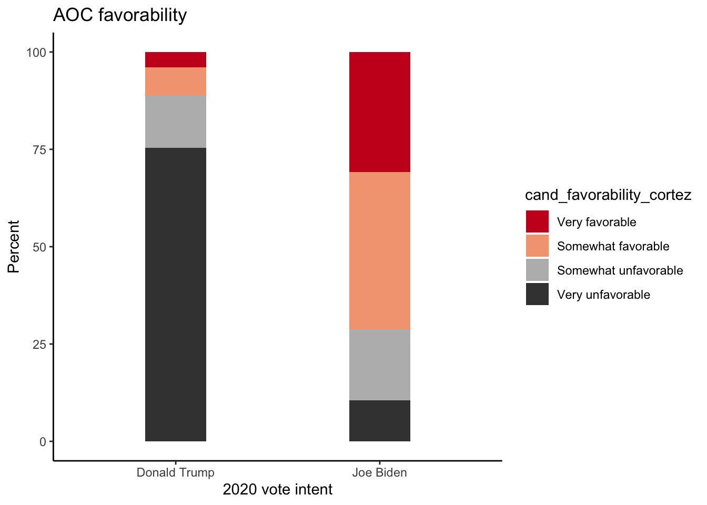
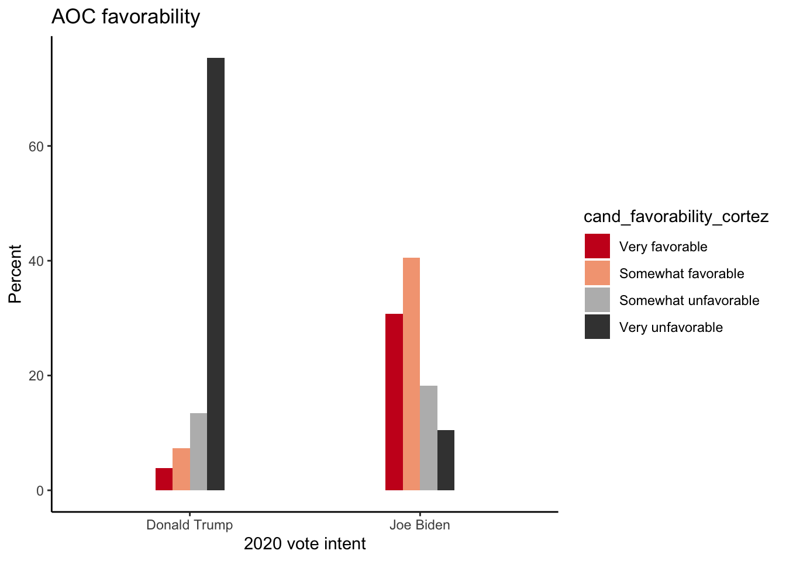
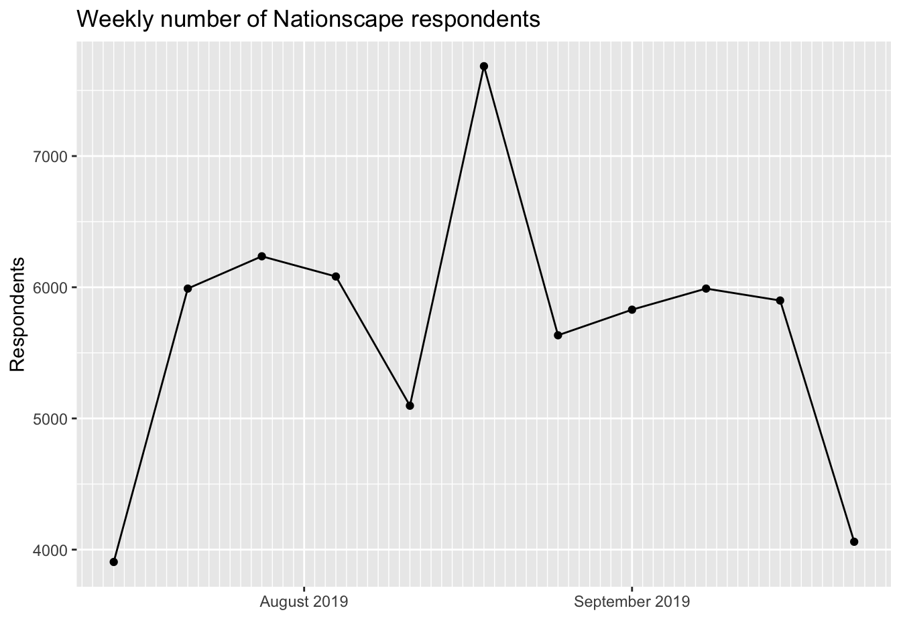
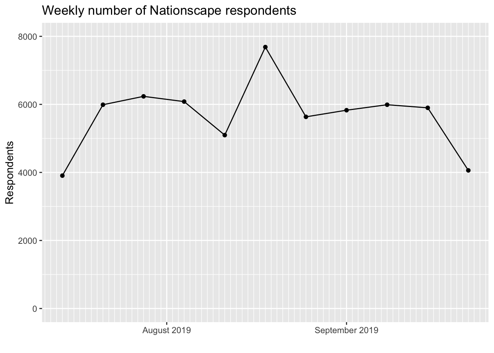
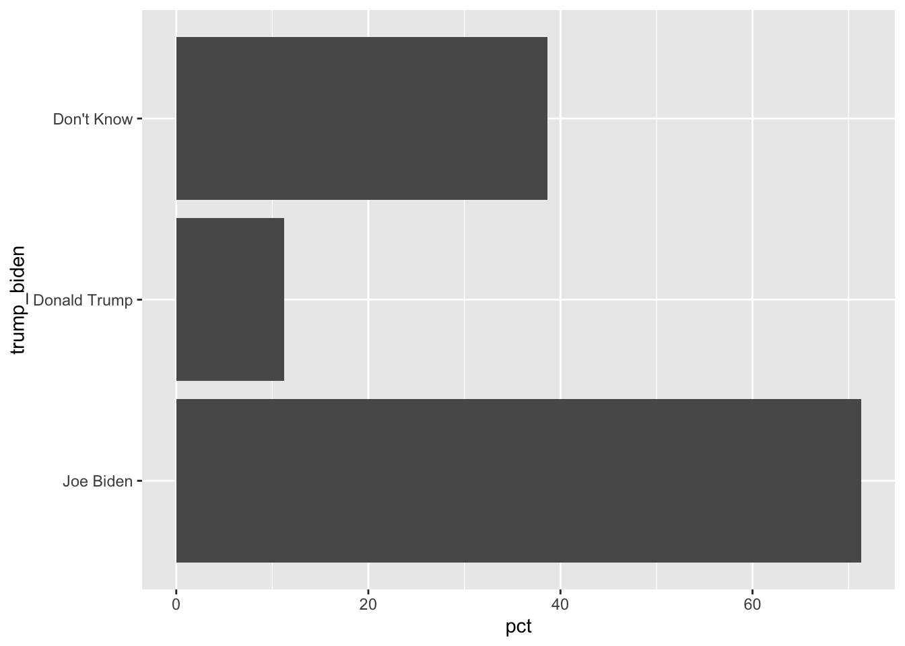
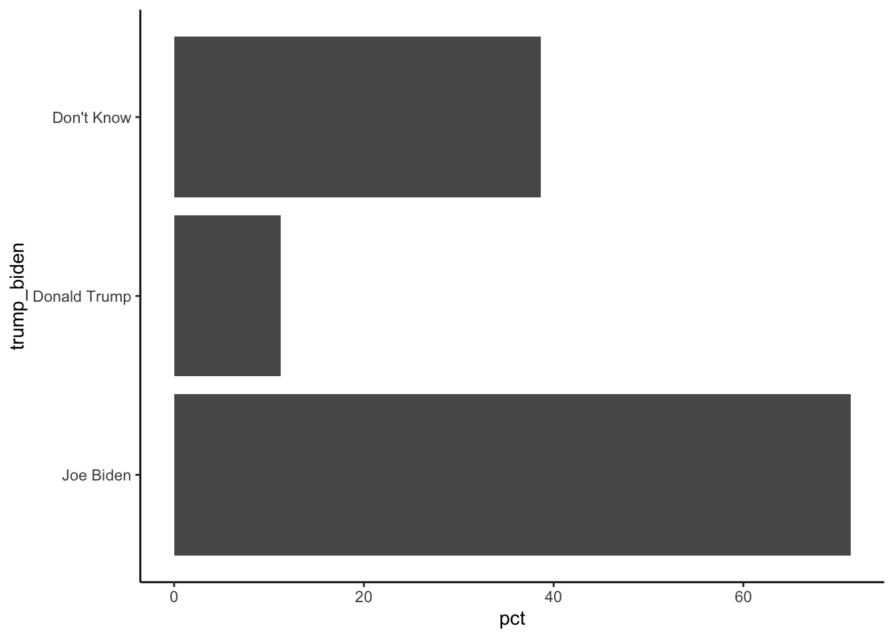
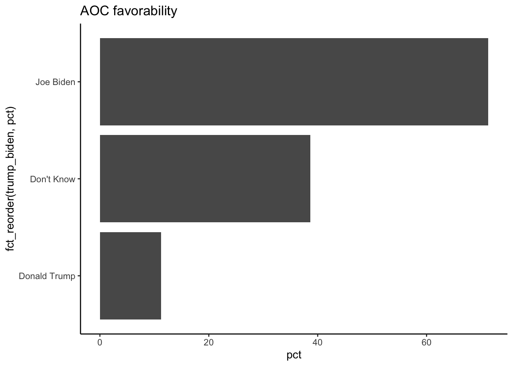
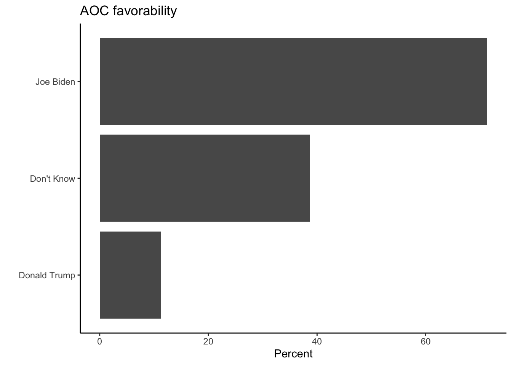
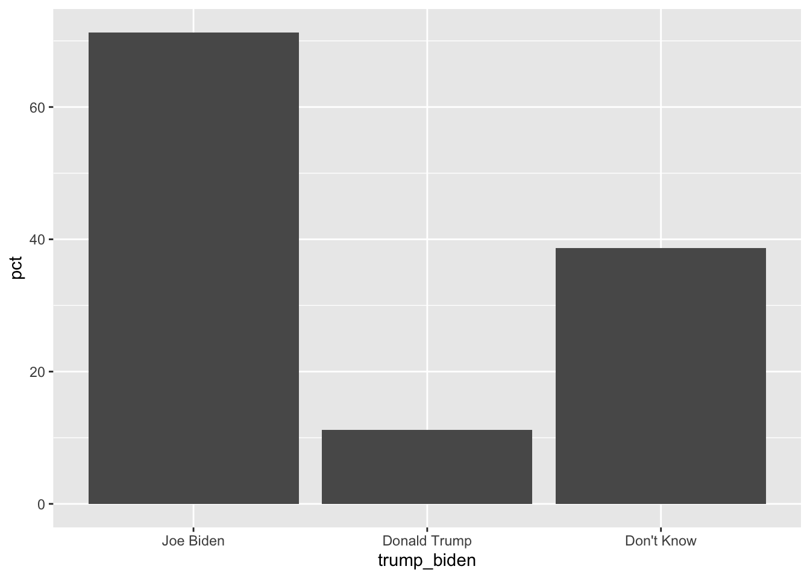

In many, maybe most, situations, your dataset will have so many rows that it would not be realistic to plot every single observations.
This means that you will want to:
Calculate some aggregate statisitcs first. Think of this “new” data object as just a new spreadsheet.
Pass the smaller object (often a tibble or a data frame) into ggplot(). This the first layer.
Choose the parts (rows and columns) which are most relevant.
Experiment with…
… arrangements within aes()
… different geoms
… sub-groups of the data (faceting may or may not be informative)
… themes, labels, and so on.
library(tidyverse)
── Attaching core tidyverse packages ──────────────────────── tidyverse 2.0.0 ──
✔ dplyr 1.1.1 ✔ readr 2.1.4
✔ forcats 1.0.0 ✔ stringr 1.5.0
✔ ggplot2 3.4.2 ✔ tibble 3.2.1
✔ lubridate 1.9.2 ✔ tidyr 1.3.0
✔ purrr 1.0.1
── Conflicts ────────────────────────────────────────── tidyverse_conflicts() ──
✖ dplyr::filter() masks stats::filter()
✖ dplyr::lag() masks stats::lag()
ℹ Use the conflicted package (<http://conflicted.r-lib.org/>) to force all conflicts to become errors
pollster::crosstab(df = a, x = trump_biden, y = cand_favorability_cortez,weight = weight,format ="long") %>%filter(trump_biden!="Don't Know") %>%ggplot(aes(x=fct_reorder(trump_biden,pct), y = pct,fill=cand_favorability_cortez)) +geom_col(width = .3) +theme_classic() +scale_fill_brewer(palette ="RdGy") +labs(y="Percent", x ="2020 vote intent", title ="AOC favorability")

pollster::crosstab(df = a, x = trump_biden, y = cand_favorability_cortez,weight = weight,format ="long") %>%filter(trump_biden!="Don't Know") %>%ggplot(aes(x=fct_reorder(trump_biden,pct), y = pct,fill=cand_favorability_cortez)) +geom_col(width = .3, position =position_dodge()) +theme_classic() +scale_fill_brewer(palette ="RdGy") +labs(y="Percent", x ="2020 vote intent", title ="AOC favorability")

pollster::crosstab(df = a, x = trump_biden, y = aoc_Favorable,weight = weight,format ="long") %>%filter(aoc_Favorable==1, trump_biden!="Don't Know") %>%ggplot(aes(y=fct_reorder(trump_biden,pct), x = pct)) +geom_col(width = .3,fill=c("blue3","firebrick2")) +theme_classic() +labs(x="Percent", y ="Supporters of...", title ="AOC favorability") +geom_label(aes(label=round(pct,1)))
# A tibble: 1 × 2
first last
<date> <date>
1 2019-07-18 2019-09-25
2.4
a %>%group_by(week) %>%tally() %>%ggplot(aes(x=week,y=n)) +geom_bar(stat="identity") +labs(x="",y="Respondents",title="Weekly number of Nationscape respondents")
2.5
a %>%group_by(week) %>%tally() %>%ggplot(aes(x=week,y=n)) +geom_bar(stat="identity") +labs(x="",y="Respondents",title="Weekly number of Nationscape respondents") +scale_x_date(date_breaks ="2 weeks", date_labels ="%W")
2.6
a %>%group_by(week) %>%tally() %>%ggplot(aes(x=week,y=n)) +geom_bar(stat="identity") +labs(x="",y="Respondents",title="Weekly number of Nationscape respondents") +scale_x_date(date_breaks ="1 months", minor_breaks ="1 weeks",date_labels ="%b %y")
2.7
a %>%group_by(week) %>%tally() %>%ggplot(aes(x=week,y=n)) +geom_line() +geom_point() +labs(x="",y="Respondents",title="Weekly number of Nationscape respondents") +scale_x_date(date_breaks ="1 months", minor_breaks ="1 days",date_labels ="%B %Y")

2.8
a %>%group_by(week) %>%tally() %>%ggplot(aes(x=week,y=n)) +geom_line() +geom_point() +labs(x="",y="Respondents",title="Weekly number of Nationscape respondents") +scale_x_date(date_breaks ="1 months", minor_breaks ="1 days",date_labels ="%B %Y") +ylim(c(0,8000))

2.9
2.9.1 Favorability of AOC
table(a$aoc_Favorable)
0 1
19896 16993
. . .
a %>%summarise(AOC_fav =mean(aoc_Favorable))
# A tibble: 1 × 1
AOC_fav
<dbl>
1 NA
. . .
a %>%summarise(AOC_fav =mean(aoc_Favorable,na.rm=T),AOC_fav_w =weighted.mean(aoc_Favorable,w=weight,na.rm=T))
Warning: There was 1 warning in `mutate()`.
ℹ In argument: `aoc_Favorable = forcats::fct_explicit_na(aoc_Favorable)`.
Caused by warning:
! `fct_explicit_na()` was deprecated in forcats 1.0.0.
ℹ Please use `fct_na_value_to_level()` instead.
ℹ The deprecated feature was likely used in the pollster package.
Please report the issue to the authors.
# A tibble: 3 × 5
Response Frequency Percent `Valid Percent` `Cumulative Percent`
<fct> <dbl> <dbl> <dbl> <dbl>
1 0 20364. 32.6 55.5 55.5
2 1 16303. 26.1 44.5 100
3 (Missing) 25741. 41.2 NA NA
. . .
pollster::crosstab(df = a, x = gender, y = aoc_Favorable,weight = weight)
# A tibble: 2 × 4
gender `0` `1` n
<fct> <dbl> <dbl> <dbl>
1 Female 51.0 49.0 17352.
2 Male 59.6 40.4 19315.
. . .
pollster::crosstab(df = a, x = gender, y = aoc_Favorable,weight = weight,format ="long")
# A tibble: 4 × 4
gender aoc_Favorable pct n
<fct> <fct> <dbl> <dbl>
1 Female 0 51.0 17352.
2 Female 1 49.0 17352.
3 Male 0 59.6 19315.
4 Male 1 40.4 19315.
2.11 Favorability by vote choice (intent)
pollster::crosstab(df = a, x = trump_biden, y = aoc_Favorable,weight = weight,format ="long")
# A tibble: 6 × 4
trump_biden aoc_Favorable pct n
<fct> <fct> <dbl> <dbl>
1 Joe Biden 0 28.7 18881.
2 Joe Biden 1 71.3 18881.
3 Donald Trump 0 88.8 14695.
4 Donald Trump 1 11.2 14695.
5 Don't Know 0 61.3 2989.
6 Don't Know 1 38.7 2989.
2.12 Favorability by vote choice (intent)
pollster::crosstab(df = a, x = trump_biden, y = aoc_Favorable,weight = weight,format ="long") %>%filter(aoc_Favorable==1)
# A tibble: 3 × 4
trump_biden aoc_Favorable pct n
<fct> <fct> <dbl> <dbl>
1 Joe Biden 1 71.3 18881.
2 Donald Trump 1 11.2 14695.
3 Don't Know 1 38.7 2989.
2.13 Favorability by vote choice (intent)
pollster::crosstab(df = a, x = trump_biden, y = aoc_Favorable,weight = weight,format ="long") %>%filter(aoc_Favorable==1) # ggplot(aes(x= ..., y = ...))
2.14 Favorability by vote choice (intent)
pollster::crosstab(df = a, x = trump_biden, y = aoc_Favorable,weight = weight,format ="long") %>%filter(aoc_Favorable==1) %>%ggplot(aes(x= trump_biden, y = pct)) +geom_col()
2.15 Favorability by vote choice (intent)
pollster::crosstab(df = a, x = trump_biden, y = aoc_Favorable,weight = weight,format ="long") %>%filter(aoc_Favorable==1) %>%ggplot(aes(x= trump_biden, y = pct)) +geom_col()
2.16 Favorability by vote choice (intent)
pollster::crosstab(df = a, x = trump_biden, y = aoc_Favorable,weight = weight,format ="long") %>%filter(aoc_Favorable==1) %>%ggplot(aes(y= trump_biden, x = pct)) +geom_col()

2.17 Favorability by vote choice (intent)
pollster::crosstab(df = a, x = trump_biden, y = aoc_Favorable,weight = weight,format ="long") %>%filter(aoc_Favorable==1) %>%ggplot(aes(y= trump_biden, x = pct)) +geom_col() +theme_classic()

2.18 Favorability by vote choice (intent)
pollster::crosstab(df = a, x = trump_biden, y = aoc_Favorable,weight = weight,format ="long") %>%filter(aoc_Favorable==1) %>%ggplot(aes(y=fct_reorder(trump_biden,pct), x = pct)) +geom_col() +theme_classic() +ggtitle("AOC favorability")

2.19 Favorability by vote choice (intent)
pollster::crosstab(df = a, x = trump_biden, y = aoc_Favorable,weight = weight,format ="long") %>%filter(aoc_Favorable==1) %>%ggplot(aes(y=fct_reorder(trump_biden,pct), x = pct)) +geom_col() +theme_classic() +labs(x="Percent", y ="", title ="AOC favorability")

2.20 Favorability by vote choice (intent)
pollster::crosstab(df = a, x = trump_biden, y = aoc_Favorable,weight = weight,format ="long") %>%filter(aoc_Favorable==1) %>%ggplot(aes(y=fct_reorder(trump_biden,pct), x = pct)) +geom_col(width = .3,fill="darkorange") +theme_classic() +labs(x="Percent", y ="", title ="AOC favorability")

2.21 Favorability by vote choice (intent)
pollster::crosstab(df = a, x = trump_biden, y = aoc_Favorable,weight = weight,format ="long") %>%filter(aoc_Favorable==1) %>%ggplot(aes(y=fct_reorder(trump_biden,pct), x = pct)) +geom_col(width = .3,fill="darkorange") +theme_classic() +labs(x="Percent", y ="", title ="AOC favorability") +geom_label(aes(label=pct))
2.22 Favorability by vote choice (intent)
pollster::crosstab(df = a, x = trump_biden, y = aoc_Favorable,weight = weight,format ="long") %>%filter(aoc_Favorable==1) %>%ggplot(aes(y=fct_reorder(trump_biden,pct), x = pct)) +geom_col(width = .3,fill="darkorange") +theme_classic() +labs(x="Percent", y ="", title ="AOC favorability") +geom_label(aes(label=round(pct,1)))
# A tibble: 3 × 2
climatechangeBIN n
<dbl> <int>
1 0 1582
2 1 439
3 NA 2
Are the missing observations the same for the original and the recoded variable? (If not, we would want to check whether earlier code did something unintended.)
d2 %>%count(climatechangeBIN,climatechange)
# A tibble: 6 × 3
climatechangeBIN climatechange n
<dbl> <dbl> <int>
1 0 1 733
2 0 2 454
3 0 3 395
4 1 4 233
5 1 5 206
6 NA NA 2